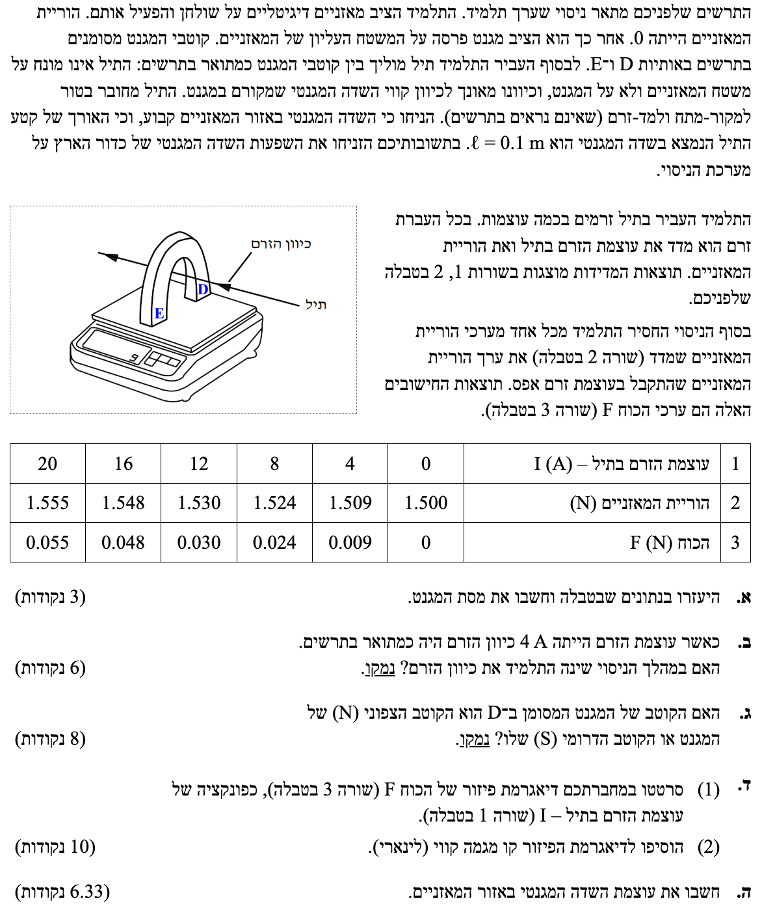

פתרון מלא ומודרך: חשמל ומגנטיות
בגרות 2015 מועד א' שאלה 4
מציאת מסת מגנט, כיוון זרם, קטבים, וחישוב שדה מגנטי בעזרת גרף
עודכן:
--- --:--:--
מבט כללי על השאלה
שלום לתלמידים! בבעיה זו ננתח ניסוי קלאסי המדגים את הכוח המגנטי הפועל על תיל נושא זרם בשדה מגנטי.
התרגיל משלב הבנה של כוחות מכניים (חוקי ניוטון), קריאת גרפים, ואת כלל יד ימין למציאת כיוונים מגנטיים. נעבוד מסודר, צעד אחר צעד.

[תמונת השאלה המקורית]
לא נמצאה תמונה בשם question-image.png באותה תיקייה.
מה נתון:
- כאשר הזרם בתיל הוא אפס (\( I = 0 \)), הוריית המאזניים היא \( W_0 = 1.500 \text{ N} \).
- תאוצת הכובד: \( g = 10 \text{ m/s}^2 \).
- ציר ייחוס: נבחר את ציר ה-y חיובי כלפי מעלה.
מה מחפשים: את מסת המגנט, נסמן אותה ב- \( M_m \).
נוסחאות ועקרונות בשימוש:
\( \Sigma F = ma \)
\( F_g = mg \)
עיקרון: מאזניים מודדים את הכוח הנורמלי (\( N \)) שהם מפעילים על הגוף שמונח עליהם, ולא את המסה שלו ישירות.
פתרון צעד-אחר-צעד:
במצב שבו אין זרם חשמלי במערכת, אין כוחות מגנטיים. המגנט מונח במנוחה על המאזניים, ולכן התאוצה שלו היא אפס.
נסרטט תרשים כוחות חופשי (FBD) עבור המגנט:
נרשום את משוואת הכוחות בציר ה-y:
\[ \Sigma F_y = m a_y \]
\[ N_0 - M_m g = 0 \]
נציב את הנתונים הידועים (\( N_0 = 1.500 \), \( g = 10 \)):
\[ 1.500 - M_m \cdot 10 = 0 \]
\[ 10 M_m = 1.500 \]
\[ M_m = \frac{1.500}{10} = 0.150 \text{ kg} \]
מסקנה: מסת המגנט היא \( M_m = 0.150 \text{ kg} \).
💡 טיפ מורה: חשוב מאוד להבין איך עובדים מאזניים!
מאזניים אינם מודדים מסה באופן ישיר. למעשה, הם מודדים את הכוח שמופעל עליהם (כוח הלחיצה של הגוף כלפי מטה). על פי החוק השלישי של ניוטון (פעולה ותגובה), כוח זה שווה בגודלו לכוח הנורמלי (\(N\)) שהמאזניים מפעילים בחזרה על הגוף כלפי מעלה.
בשאלות רבות בבגרות תיתקלו במצב שבו הוריית המאזניים ניתנת דווקא בקילוגרמים (kg). מה עושים במצב כזה? זוכרים שהמאזניים פשוט "תרגמו" את הכוח הנורמלי למסה על ידי חלוקה ב- \(g\).
מכיוון שאצלנו משתמשים תמיד ב- \(g=10 \text{ m/s}^2\), אם נתון לכם שמאזניים מראים לדוגמה הורייה של 3 ק"ג, המשמעות האמיתית היא שהכוח הנורמלי הפועל במערכת הוא בעצם ההורייה כפול 10, כלומר \( N = 3 \cdot 10 = 30 \text{ N} \).
בשאלה שלנו כאן עשו לנו חיים קלים: ההורייה ניתנה מראש בניוטונים (N), ולכן מדובר ישירות בכוח הנורמלי נטו מבלי שנצטרך להכפיל בכלום.
מה נתון:
- ערכי הכוח \( F \) בטבלה מוגדרים כ: \( F = W_{\text{reading}} - W_0 \).
- כל ערכי ה- \( F \) המופיעים בשורה 3 בטבלה הינם ערכים חיוביים.
מה מחפשים: לקבוע האם התלמיד הפך את כיוון הזרם במהלך הניסוי, ולנמק זאת.
נוסחאות ועקרונות בשימוש:
\( \vec{F}_{1 \rightarrow 2} = -\vec{F}_{2 \rightarrow 1} \)
כלל יד ימין
פתרון צעד-אחר-צעד:
בואו ננתח את המשמעות של תוצאות הטבלה. הכוח \( F \) חיובי לכל אורך הניסוי. משמעות הדבר היא שהוריית המאזניים (הכוח הנורמלי \( N \)) תמיד הייתה גדולה מ-1.500 N.
מדוע המאזניים מראים משקל גדול יותר? נחזור לתרשים הכוחות על המגנט. בנוסף לכוח הכובד, פועל כעת על המגנט כוח מגנטי מהתיל (\( F_{B, \text{magnet}} \)). כדי שהמאזניים ידחפו את המגנט חזק יותר כלפי מעלה (כלומר, \( N \) יגדל), הכוח המגנטי הפועל על המגנט חייב להיות מכוון כלפי מטה.
\[ \Sigma F_y = 0 \]
\[ N - M_m g - F_{B,\text{magnet}} = 0 \implies N = M_m g + F_{B,\text{magnet}} \]
מכיוון שערכו של \( F \) גדל בצורה רציפה (וסימנו לא מתחלף למינוס) לכל ערכי הזרם, אנו מבינים שהכוח המגנטי על המגנט תמיד הצביע כלפי מטה לאורך כל הניסוי.
על פי נוסחת הכוח המגנטי \( \vec{F} = I\vec{L} \times \vec{B} \), כיוון הכוח תלוי בכיוון הזרם. אם התלמיד היה הופך את כיוון הזרם, כיוון הכוח המגנטי היה מתהפך, הכוח על המגנט היה פועל כלפי מעלה, והוריית המאזניים הייתה קטנה מ-1.5 N (נקבל \( F \) שלילי בטבלה).
מאחר שזה לא קרה, כיוון הזרם נשמר.
מסקנה: לא, התלמיד לא שינה את כיוון הזרם במהלך הניסוי. המגמה של התוצאות מראה תוספת כוח חיובית קבועה בכיוונה לכל אורך הניסוי.
💡 טיפ מורה: מי מרגיש את "כוח התגובה" של השדה?
כשאומרים לנו ש"השדה המגנטי מפעיל כוח על תיל", חשוב לזכור שכוח הוא תמיד אינטראקציה בין שני גופים. שדה כשלעצמו אינו גוף שיכול לספוג כוח בחזרה.
המשמעות האמיתית היא שהאינטראקציה מתקיימת בין הגוף שיוצר את השדה לבין הגוף שעליו פועל השדה. במקרה שלנו, האינטראקציה היא בין יוצר השדה (המגנט) לבין התיל.
לכן, לפי החוק השלישי של ניוטון, אם התיל דוחף את המגנט כלפי מטה, הכוח שהמגנט מפעיל חזרה על התיל (באמצעות השדה שלו) חייב להיות כלפי מעלה. הבנה זו – שהכוח הנגדי מורגש תמיד על ידי יוצר השדה – היא המפתח לפתרון שאלות שבהן שוקלים או בוחנים את המקור לשדה!
מה נתון:
- כיוון הזרם בתיל מודגם בתרשים (זורם "לתוך הדף / אל עבר פרסת המגנט").
- הוריית המאזניים גדלה עם הפעלת הזרם (כוח מגנטי על המגנט הוא למטה).
- הקוטב הימני מסומן ב- D והשמאלי ב- E.
מה מחפשים: לקבוע מי מהקטבים הוא קוטב צפון (N) ומי מהם דרום (S).
נוסחאות ועקרונות בשימוש:
\( \vec{F}_{1 \rightarrow 2} = -\vec{F}_{2 \rightarrow 1} \)
כלל יד ימין
עיקרון: קווי השדה המגנטי מחוץ למגנט מכוונים מקוטב צפון (N) לקוטב דרום (S).
פתרון צעד-אחר-צעד:
בסעיף ב' הסקנו שהכוח המגנטי שהתיל מפעיל על המגנט הוא כלפי מטה.
לפי החוק השלישי של ניוטון, המגנט מפעיל על התיל כוח מגנטי שווה בגודלו והפוך בכיוונו. לכן, הכוח המגנטי על התיל הוא כלפי מעלה.
כעת נשתמש בכלל יד ימין (כף יד) עבור התיל:
- אגודל (כיוון הזרם): מצביע לכיוון הזרם \(\vec{I}\) בתיל - לתוך הדף (הרחק מאיתנו).
- כף היד (כיוון הכוח): דוחפת לכיוון הכוח המגנטי \(\vec{F}\) (הפועל על מטען חיובי/זרם) - כלפי מעלה.
- ארבע אצבעות (כיוון השדה): כתוצאה מכך, האצבעות יצביעו לכיוון קווי השדה המגנטי \(\vec{B}\) - האצבעות פונות שמאלה.
הסקנו שקווי השדה המגנטי נעים מימין לשמאל, כלומר מקוטב D לקוטב E.
מכיוון שקווי שדה יוצאים מהצפון (N) ונכנסים לדרום (S), קוטב D חייב להיות הקוטב הצפוני.
מסקנה: קוטב D הוא הקוטב הצפוני (N), וקוטב E הוא הקוטב הדרומי (S).
💡 טיפ מורה: זהירות מלכודת! שואלים אתכם תמיד על השדה שיוצר המגנט (שמשפיע על התיל). זכרו שהמאזניים מרגישים את הכוח על המגנט, לכן צעד ראשון והכרחי לפני כלל יד ימין הוא להשתמש בחוק השלישי של ניוטון כדי למצוא מה כיוון הכוח על התיל!
מה נתון: טבלת נתונים המקשרת בין הזרם \( I \) (באמפרים) לכוח \( F \) (בניוטונים).
מה מחפשים: לשרטט גרף בו הזרם הוא ציר ה-x והכוח הוא ציר ה-y, ולהוסיף קו מגמה (Best Fit Line).
פתרון צעד-אחר-צעד:
נציב את הנקודות מהטבלה במערכת צירים:
\( (0,0), (4,0.009), (8,0.024), (12,0.030), (16,0.048), (20,0.055) \).
לאחר מכן נעביר קו ישר העובר קרוב ככל האפשר לכל הנקודות. קו המגמה ששורטט מייצג את "שיטת הריבועים הפוחתים" (מינימום ריבועי המרחקים) ומאזן בצורה מיטבית את סטיית נקודות המדידה מעליו ומתחתיו.
מסקנה: הגרף שורטט בהצלחה עם קו מגמה לינארי. ניתן לראות כי קו המגמה עובר דרך הראשית כצפוי.
מה נתון:
- אורך קטע התיל הנמצא בשדה המגנטי: \( L = 0.1 \text{ m} \).
- הגרף הלינארי מהסעיף הקודם (\( F \) כפונקציה של \( I \)).
מה מחפשים: את גודל עוצמת השדה המגנטי \( B \) באזור המאזניים.
נוסחאות ועקרונות בשימוש:
\( F = IlB\sin\alpha \)
\( y = mx + b \)
פתרון צעד-אחר-צעד:
בניסוי זה, התיל מונח במאונך לקווי השדה המגנטי (התיל בציר אחד והשדה עובר מקוטב לקוטב בציר הניצב לו). לכן הזווית בין הזרם לשדה היא \( \alpha = 90^\circ \), ו- \( \sin(90^\circ) = 1 \).
נרשום את משוואת הכוח:
\[ F = I L B \]
אם נסדר את המשוואה בצורה שתתאים לגרף ששרטטנו (בו ציר ה-y הוא \( F \) וציר ה-x הוא \( I \)):
\[ F = (L \cdot B) \cdot I \]
זוהי משוואת ישר מהצורה \( y = mx \), כאשר שיפוע הישר (m) שווה למקדם של המשתנה הבלתי תלוי:
\( m = L \cdot B \).
כעת, נמצא את שיפוע קו המגמה מהגרף. לפי כללי העבודה הנכונים במעבדה, נבחר שתי נקודות הנמצאות ממש על קו המגמה ששרטטנו (ולא נתונים מתוך הטבלה), ונדאג שהן יהיו רחוקות זו מזו וקלות לקריאה מדויקת מחיתוך קווי הרשת (הגריד).
נקודה אחת שניקח תהיה ראשית הצירים \( (0, 0) \).
נקודה שנייה שקל מאוד לקרוא מהגרף היא בזרם \( I = 14 \text{ A} \), שם קו המגמה חותך בדיוק את קו הרשת של \( F = 0.040 \text{ N} \). לכן נבחר בנקודה \( (14, 0.040) \).
\[ m = \frac{\Delta F}{\Delta I} = \frac{0.040 - 0}{14 - 0} = 0.002857... \text{ N/A} \]
נעגל את התוצאה ל-3 ספרות מהותיות כנדרש ונקבל \( m = 0.00286 \text{ N/A} \).
נציב את השיפוע שמצאנו בחזרה לקשר התיאורטי כדי למצוא את B:
\[ m = L \cdot B \]
\[ 0.00286 = 0.1 \cdot B \]
\[ B = \frac{0.00286}{0.1} = 0.0286 \text{ T} \]
מסקנה: עוצמת השדה המגנטי באזור המאזניים היא \( B = 0.0286 \text{ T} \).
💡 טיפ מורה: זכרו את הכלל החשוב בניסויי מעבדה: לעולם אל תחשבו גדלים על ידי הצבת נקודה בודדת למשוואה מתוך הטבלה. חובה לבנות גרף, למצוא את שיפוע קו המגמה מתוך שתי נקודות מרוחקות ונוחות לקריאה שיושבות על הקו, ולהשוות אותו לביטוי האלגברי של השיפוע. כך תקבלו את התשובה המדויקת והאמינה ביותר שמקזזת שגיאות מדידה.